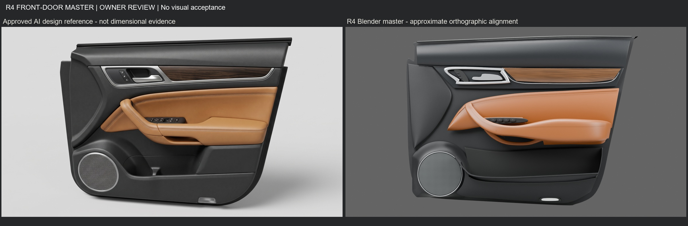
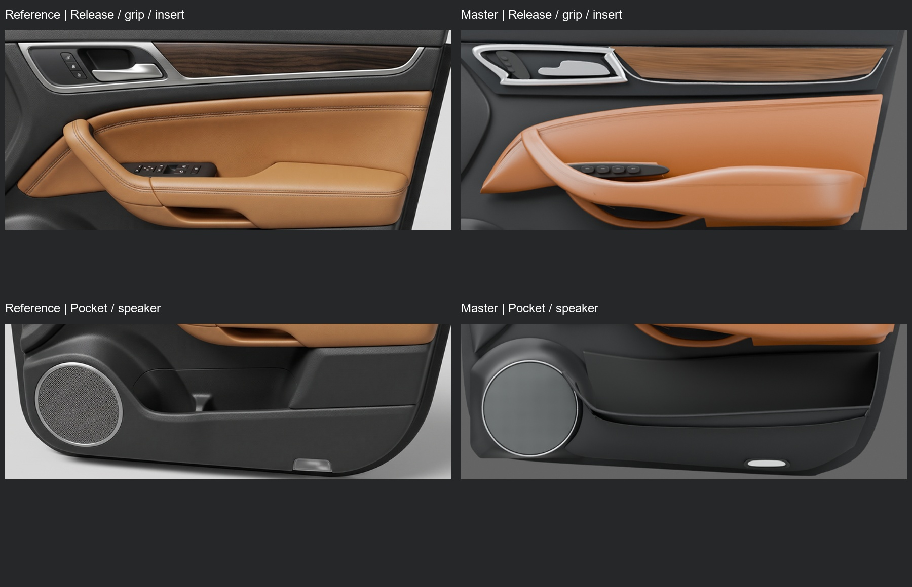

AUTOLAB / R4 / OWNER CHECKPOINT
One front-door master.
Visual approval remains open.
Editable Blender candidate and actual renders. Structural checks pass; premium visual fidelity remains unresolved. No runtime GLB, application change or production promotion.
Approved design versus candidate

Same aspect and approximate framing. Unknown AI camera and inferred depth prevent exact projection or dimensional comparison. References are unchanged.
Remaining visible discrepancies
Release lever and switches are simplified; armrest profile and support opening differ; the speaker-to-pocket junction is pinched and the lip profile differs; upholstery grain and seams remain weak. Procedural wood reads too uniform. These require owner judgement before any continuation.

Inspection views
Review decision
Please review silhouette, trim/release integration, grip support, pocket depth, speaker contour and material quality. Accept or request corrections to this master before runtime optimisation or any other cabin component. This page does not record approval.